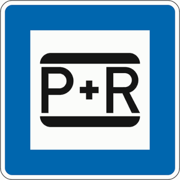

Zeichen 316
Parken und Reisen

16 Tatbestände dazu
424601Sie führten das Kraftfahrzeug mit einer Atemalkoholkonzentration von 0,25 mg/l oder mehr. Die festgestellte Atemalkoholkonzentration betrug (X) mg/l. - bei Eintragung von bereits einer Entscheidung nach § 24a StVG, §§ 316 oder 315c Abs. 1 Nr. 1 Bstb. a StGB im FAER.
1000 €2 PunkteFahrverbot 3 Monat(e)A-Verstoß
424602
Sie führten das Kraftfahrzeug mit einer Atemalkoholkonzentration von 0,25 mg/l oder mehr. Die festgestellte Atemalkoholkonzentration betrug (X) mg/l. - bei Eintragung von bereits mehreren Entscheidungen nach § 24a StVG, §§ 316 oder 315c Abs. 1 Nr. 1 Bstb. a StGB im FAER.
1500 €2 PunkteFahrverbot 3 Monat(e)A-Verstoß
424607
Sie führten das Kraftfahrzeug mit einer Blutalkoholkonzentration von 0,5 Promille oder mehr. Die festgestellte Blutalkoholkonzentration betrug (X) Promille. - bei Eintragung von bereits einer Entscheidung nach § 24a StVG, §§ 316 oder 315c Abs. 1 Nr. 1 Bstb. a StGB im FAER.
1000 €2 PunkteFahrverbot 3 Monat(e)A-Verstoß
424608
Sie führten das Kraftfahrzeug mit einer Blutalkoholkonzentration von 0,5 Promille oder mehr. Die festgestellte Blutalkoholkonzentration betrug (X) Promille. - bei Eintragung von bereits mehreren Entscheidungen nach § 24a StVG, §§ 316 oder 315c Abs. 1 Nr. 1 Bstb. a StGB im FAER.
1500 €2 PunkteFahrverbot 3 Monat(e)A-Verstoß
424613
Sie führten das Kraftfahrzeug mit einer Alkoholmenge im Körper, die zu einer Atemalkoholkonzentration von 0,25 mg/l oder mehr geführt hat. Die festgestellte Atemalkoholkonzentration betrug (X) mg/l. - bei Eintragung von bereits einer Entscheidung nach § 24a StVG, §§ 316 oder 315c Abs. 1 Nr. 1 Bstb. A StGB im FAER.
1000 €2 PunkteFahrverbot 3 Monat(e)A-Verstoß
424614
Sie führten das Kraftfahrzeug mit einer Alkoholmenge im Körper, die zu einer Atemalkoholkonzentration von 0,25 mg/l oder mehr geführt hat. Die festgestellte Atemalkoholkonzentration betrug (X) mg/l. - bei Eintragung von bereits mehreren Entscheidungen nach § 24a StVG, §§ 316 oder 315c Abs. 1 Nr. 1 Bstb. a StGB im FAER.
1500 €2 PunkteFahrverbot 3 Monat(e)A-Verstoß
424619
Sie führten das Kraftfahrzeug mit einer Alkoholmenge im Körper, die zu einer Blutalkoholkonzentration von 0,5 Promille oder mehr geführt hat. Die festgestellte Blutalkoholkonzentration betrug (X) Promille. - bei Eintragung von bereits einer Entscheidung nach § 24a StVG, §§ 316 oder 315c Abs. 1 Nr. 1 Bstb. a StGB im FAER.
1000 €2 PunkteFahrverbot 3 Monat(e)A-Verstoß
424620
Sie führten das Kraftfahrzeug mit einer Alkoholmenge im Körper, die zu einer Blutalkoholkonzentration von 0,5 Promille oder mehr geführt hat. Die festgestellte Blutalkoholkonzentration betrug (X) Promille. - bei Eintragung von bereits mehreren Entscheidungen nach § 24a StVG, §§ 316 oder 315c Abs. 1 Nr. 1 Bstb. a StGB im FAER.
1500 €2 PunkteFahrverbot 3 Monat(e)A-Verstoß
424631
Sie führten das Kraftfahrzeug mit 3,5 ng/ml oder mehr Tetrahydrocannabinol im Blutserum. - bei Eintragung von bereits einer Entscheidung nach § 24 a StVG, §§ 316 oder 315c Abs. 1 Nr. 1 Bstb. a StGB im FAER.
1000 €2 PunkteFahrverbot 3 Monat(e)A-Verstoß
424632
Sie führten das Kraftfahrzeug mit 3,5 ng/ml oder mehr Tetrahydrocannabinol im Blutserum. - bei Eintragung von bereits mehreren Entscheidungen nach § 24 a StVG, §§ 316 oder 315c Abs. 1 Nr. 1 Bstb. a StGB im FAER.
1500 €2 PunkteFahrverbot 3 Monat(e)A-Verstoß
424649
Sie führten das Kraftfahrzeug unter Wirkung des berauschenden Mittels *). - bei Eintragung von bereits einer Entscheidung nach § 24a StVG, §§ 316 oder 315c Abs. 1 Nr. 1 Bstb. a StGB im FAER.
1000 €2 PunkteFahrverbot 3 Monat(e)A-Verstoß
424650
Sie führten das Kraftfahrzeug unter Wirkung des berauschenden Mittels *). - bei Eintragung von bereits mehreren Entscheidungen nach § 24a StVG, §§ 316 oder 315c Abs. 1 Nr. 1 Bstb. a StGB im FAER.
1500 €2 PunkteFahrverbot 3 Monat(e)A-Verstoß
424673
Sie führten das Kraftfahrzeug mit 3,5 ng/ml oder mehr Tetrahydrocannabinol im Blutserum und haben ein alkoholisches Getränk zu sich genommen. - bei Eintragung von bereits einer Entscheidung nach § 24a StVG, §§ 316 oder 315c Abs. 1 Nr. 1 Bstb. a StGB im FAER.
1500 €2 PunkteFahrverbot 3 Monat(e)A-Verstoß
424674
Sie führten das Kraftfahrzeug mit 3,5 ng/ml oder mehr Tetrahydrocannabinol im Blutserum und haben ein alkoholisches Getränk zu sich genommen. - bei Eintragung von bereits mehreren Entscheidungen nach § 24a StVG, §§ 316 oder 315c Abs. 1 Nr. 1 Bstb. a StGB im FAER.
2000 €2 PunkteFahrverbot 3 Monat(e)A-Verstoß
424675
Sie führten das Kraftfahrzeug mit 3,5 ng/ml oder mehr Tetrahydrocannabinol im Blutserum und haben unter der Wirkung eines alkoholischen Getränks die Fahrt angetreten. - bei Eintragung von bereits einer Entscheidung nach § 24a, §§ 316 oder 315c Abs.1 Nr. 1 Bstb. a StGB im FAER.
1500 €2 PunkteFahrverbot 3 Monat(e)A-Verstoß
424676
Sie führten das Kraftfahrzeug mit 3,5 ng/ml oder mehr Tetrahydrocannabinol im Blutserum und haben unter der Wirkung eines alkoholischen Getränks die Fahrt angetreten. - bei Eintragung von bereits mehreren Entscheidungen nach § 24a StVG, §§ 316 oder 315c Abs. 1 Nr. 1 Bstb. a StGB im FAER.
2000 €2 PunkteFahrverbot 3 Monat(e)A-Verstoß